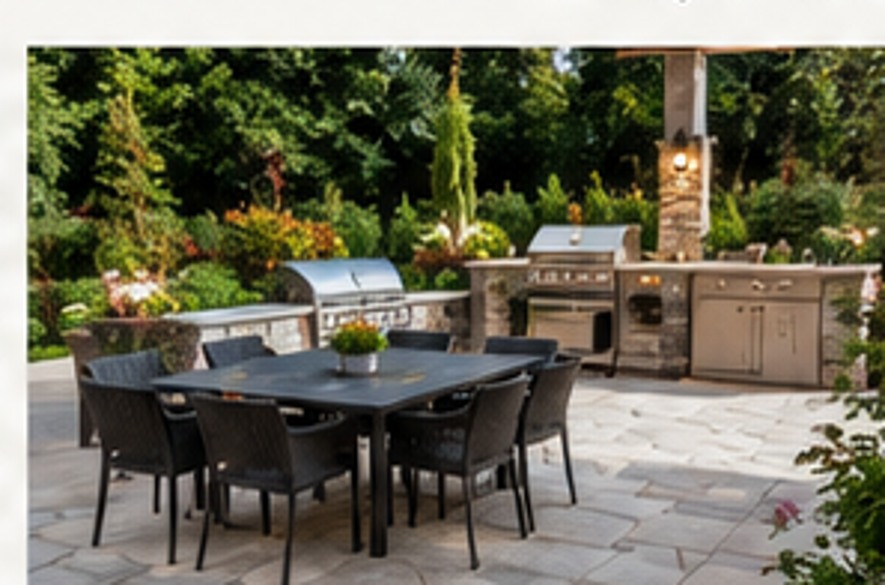
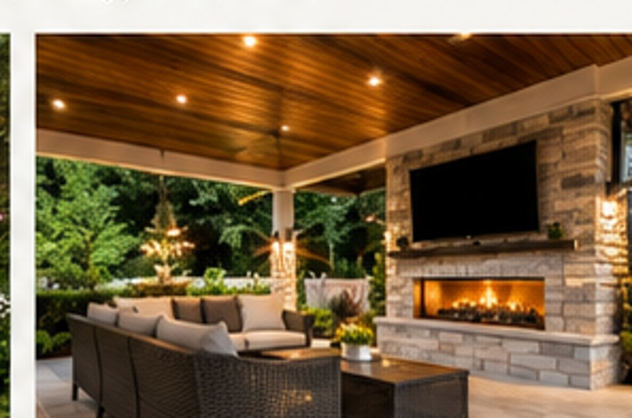
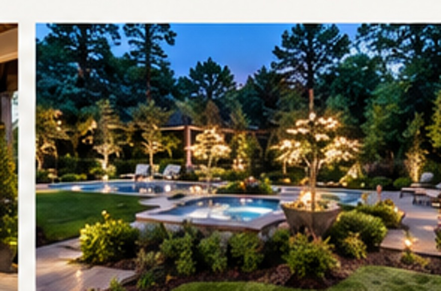
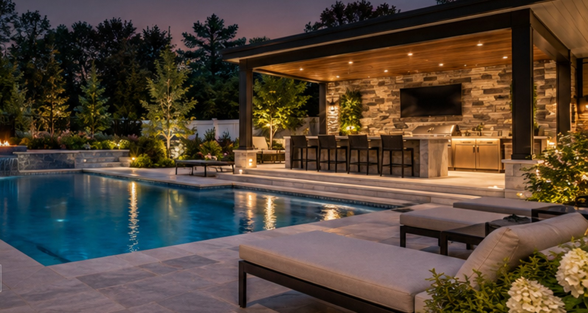

01 / WATER
Custom Inground Pools
Specializing in vinyl-liner, fiberglass and gunite inground pools tailored to your property, style and goals.
Explore pools →Custom inground swimming pools and thoughtfully designed outdoor living spaces. From your first rendering to the finishing touches, Yard Life NJ brings your entire backyard vision together with personalized service and coordinated project planning.
A boutique, one-stop experience for homeowners in Monmouth and Ocean Counties. We coordinate the trades, scope, schedule and overall budget so you can focus on the finished result.

Specializing in vinyl-liner, fiberglass and gunite inground pools tailored to your property, style and goals.
Explore pools →
Pavers, architectural concrete and standard concrete for pool decks, patios, walkways and entertaining spaces.
Explore outdoor living →
Outdoor kitchens, pergolas, low-voltage lighting, fencing and landscaping—all coordinated within one project budget.
Explore possibilities →Images are illustrative design inspiration and do not represent completed YardLife NJ projects.
Work directly with our team, explore design renderings and understand your complete project scope before work begins. Led by a PMP-certified project manager, YardLife emphasizes clear communication, disciplined cost oversight, realistic schedules and coordinated trades.
See Our Process →Pool construction, concrete, landscaping, fencing and lighting are planned together—not as disconnected projects. Your design, scope, schedule and budget stay connected from consultation through completion.
Instead of coordinating a pool builder, mason, electrician, landscaper and fence installer yourself, work with one dedicated team focused on the complete backyard vision.
Plan the pool and surrounding improvements together, with visibility into the complete project scope and costs.
Professional project management discipline applied to milestones, contractor coordination, communication and changes.
Explore how the pool, patio, outdoor kitchen, landscaping and other features work together before construction.
A boutique experience with direct communication rather than feeling like one of hundreds of projects.
Plan dependencies across excavation, plumbing, electrical, concrete, fencing and landscaping.
Backyard transformations designed around Monmouth and Ocean County homes, properties and municipal requirements.
Explore pool shapes, finishes and outdoor living ideas to help define your own backyard vision. Browse more photography in our inspiration gallery.

Inspired by the water Explore the gallery →Pool designs See inspiration →Patios & hardscapes Explore outdoor living →Outdoor living Explore ideas →Images are for design inspiration; they are not presented as verified completed Yard Life customer projects.
A great pool project involves more than selecting a shape. We help you think through the layout, materials, schedule and budget as a complete outdoor space.
Tell us about your property, how you want to use the space and what matters most.
Explore pool styles, patio materials and design renderings that bring the vision together.
Align project scope, trades and milestones with a realistic overall budget.
Planning an inground pool in Freehold, Manalapan, Marlboro, Toms River or a nearby New Jersey community? Yard Life takes a personalized approach to vinyl-liner and fiberglass pools, patios and complete backyard transformations.
Every property is different. We help connect the pool design with the surrounding outdoor living plan, including layout, access, drainage considerations and finishes.
Discuss Your Backyard →Personal attention, professional project management and a whole-backyard perspective—from pool selection to the finishing touches.
Tell us about your vision. We'll help bring the pieces together.